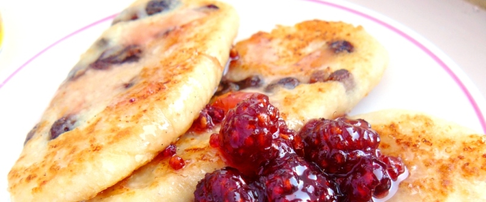

Сырники

720 / 400 гр. 9% творога протереть через металлическое сито. В отдельной мисочке взбить 1 яйцо и 100 / 60 гр. сахара, добавить эту смесь в творог. Туда же отправить семена стручка ванили или ароматизатор и 65 / 35 гр. манной крупы. Можно в тесто добавить порезанный чернослив, если сырники будут подаваться без соуса. Хорошо перемешать.
Сформировать сырники массой 60-70гр. Жарить на сковороде с растительным маслом на среднем огне, минуты по 3 с каждой стороны. Готовые сырники промакнуть бумажным полотенцем, чтобы убрать лишний жир.
Подавать сырники можно с фруктовым соусом (200гр ягод + 30гр. сахара + 6гр. кукурузного крахмала, довести до кипения, пюрировать) или карамельным соусом.